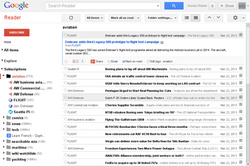

Google Reader
Source: https://en.wikipedia.org/wiki/Google_Reader
Category: company__depth2
Depth: 2
Summary
Google Reader was an RSS/Atom feed aggregator service operated by Google. It was created in early 2005 by Google engineer Chris Wetherell and launched on 7 October 2005, through Google Labs. Google Reader grew in popularity to support a number of programs which used it as a platform for serving news and information to users. Google closed Google Reader on 1 July 2013, citing declining use.
Images

Full Article
Defunct RSS/Atom feed aggregator formerly operated by Google
Google Reader was an RSS/Atom feed aggregator service operated by Google. It was created in early 2005 by Google engineer Chris Wetherell and launched on 7 October 2005, through Google Labs. Google Reader grew in popularity to support a number of programs which used it as a platform for serving news and information to users. Google closed Google Reader on 1 July 2013, citing declining use.
History
In early 2001, software engineer Chris Wetherell began a project he called "JavaCollect" that served as a news portal based on web feeds. After working at Google he began a similar project with a small team that launched an improved product on 7 October 2005, as Google Reader.
In September 2006, Google announced a redesign for Reader that included new features such as unread counts, the ability to "mark all as read", a new folder-based navigation, and an expanded view so users could quickly scan over several items at once. This also marked the addition of a sharing feature, which allowed readers to publish interesting items for others to see.
In January 2007, Google added video content from YouTube and Google Video to Reader.
In September 2007, product marketing manager Kevin Systrom (later, founder of Instagram) announced that Google Reader had graduated out of Google Labs.
Discontinuation
On 13 March 2013, Google announced they were discontinuing Google Reader, stating the product had a loyal but declining following, and they wanted to focus on fewer products. They gave users a sunset period until 1 July 2013, to move their data and suggested: "If you want to retain your Reader data, including subscriptions, you can do so through Google Takeout."
After the closure announcement, Feedly said that more than 500,000 new users had joined them in the following 48 hours, and 3 million in the following two weeks. Likewise, NewsBlur's subscriber base immediately rose from about 1,500 users to over 60,000.
In response to the planned closure, Digg also announced plans to build a Google Reader replacement, rebuilding its API and adding features to take advantage of the implicit recommendations of social network activity.
Several petitions were started to keep Google Reader running, including one on Change.org with over 100,000 signatures.
Instapaper developer Marco Arment speculated that the real reason for the closure was to try to keep everyone reading and sharing information using the now defunct Google+, and that it signaled the end of the era of unrestricted and interoperable web services like RSS from large organizations like Google, Facebook, and Twitter.
Enthusiasts re-created a work-alike replacement called "The Old Reader."
In 2022, Techdirt called the discontinuation of Google Reader "one of the defining moments in the shift from a more distributed, independent web to one that is controlled by a few large companies."
Features
Interface
Reader's interface evolved several times from an early version, described by a Google designer who helped work on the revision as a "river" of news, to various experiences optimized for a wide range of devices, from browsers to the Wii video game console.
In late 2008, Google Reader had a significant upgrade to its user experience and design. Led by Google designer Jenna Bilotta, the interface now included a cleaner visual style, collapsible navigation, "Friends" navigation, the ability to hide unread counts, and feed bundles.
Some of the features of Google Reader in 2013 were:
- a front page that let one see new items at a glance.
- automatic marking of items as read as they scrolled past (expanded view only).
- keyboard shortcuts for main functions.
- choice between list view or expanded view for item viewing (showing either just the story title or including a description, respectively).
- import and export subscription lists as an OPML file.
- search in all feeds, across all updates from subscriptions.
Organization
Users could subscribe to feeds using either Google Reader's search function, or by entering in the exact URL of the RSS or Atom feed. New posts from those feeds were then shown on the left-hand side of the screen. One could then order that list by date or relevance. Items could also be organized with labels, as well as being able to create "Starred Items" for easy access.
Sharing
From 2007 to 2011, items in Google Reader could be shared with other Web users. Previously this was done by sending a link through e-mail, directing the user to the shared article; or by creating a basic webpage that includes all shared items from a user's account. In December 2007, Google changed the sharing policy so that items the user marked as shared were automatically visible to their Google Talk contacts. Users criticized this change because there was no way to opt out.
Google removed the sharing functionality built into Reader in October 2011, and replaced it with a Google+ +1 button. Users criticized this change because it effectively dismantled existing social networks that used these features and disabled sharing and publishing functions that served as a communications medium for Iranians seeking news sources that couldn't be blocked by the government.
The Google+ +1 button and count of how many people liked an article were removed in March 2013 shortly after the announcement that Google Reader would be discontinued.[citation needed]
Offline access
Google Reader was the first application to make use of Google Gears, a browser extension that let online applications work offline. Users who installed the extension could download up to 2000 items to be read offline. After coming back online, Google Reader updated the feeds. Google Reader stopped supporting this feature in June 2010.
Mobile access
A mobile interface was released on 18 May 2006. It could be used by devices that support XHTML or WAP 2.0. On 12 May 2008, Google announced a version of Google Reader targeted at iPhone users. in December 2010, Google released a Google Reader app for Android, available from the Android Market.
iGoogle
On 4 May 2006, Google released a new feature which enabled feeds from Reader to be displayed on iGoogle (formerly Google Personalized Homepage).
Play
In March 2010, Google announced and released Google Reader Play. Play presented a slideshow interface which displayed popular items one at a time. These items were drawn from assorted sites' feeds, and their appearance in Play was based on the data provided by Reader users' responses, e.g. how many people liked or shared the item. Unlike Google Reader, a Google Account was not required to access Play.
References
External links
- Google Reader – official site
Unofficial
Elsewhere
- Who killed Google Reader? Ten years after … on TheVerge
| - v - t - e Google | |
|---|---|
| a subsidiary of Alphabet | |
| Company | |
| Development | |
| Software | |
| Hardware | |
| - v - t - e Litigation | |
| Related | |
| Italics denote discontinued products. - Category - Outline |
| - v - t - e Content aggregators | |
|---|---|
| Client software | |
| Web apps or mobile apps | - Bloglines - CommaFeed - Daylife - Digg Reader - Drupal - Feedbin - Feedly - FriendFeed - Google News - Google Reader - iGoogle - dotCMS - Imooty.eu - Inoreader - LinkedIn Pulse - Magnolia - My Yahoo! - News360 - NewsBlur - NewsBreak - Netvibes - Pageflakes - Planet - Rojo.com - Prismatic - Spokeo - The Old Reader - Tiny Tiny RSS - TweetDeck - WebGUI - Windows Live Personalized Experience - winnowTag |
| Media aggregators | |
| Related articles | - Comparison of feed aggregators - History of media aggregation - RSS enclosure |
| Italics indicate discontinued software. |